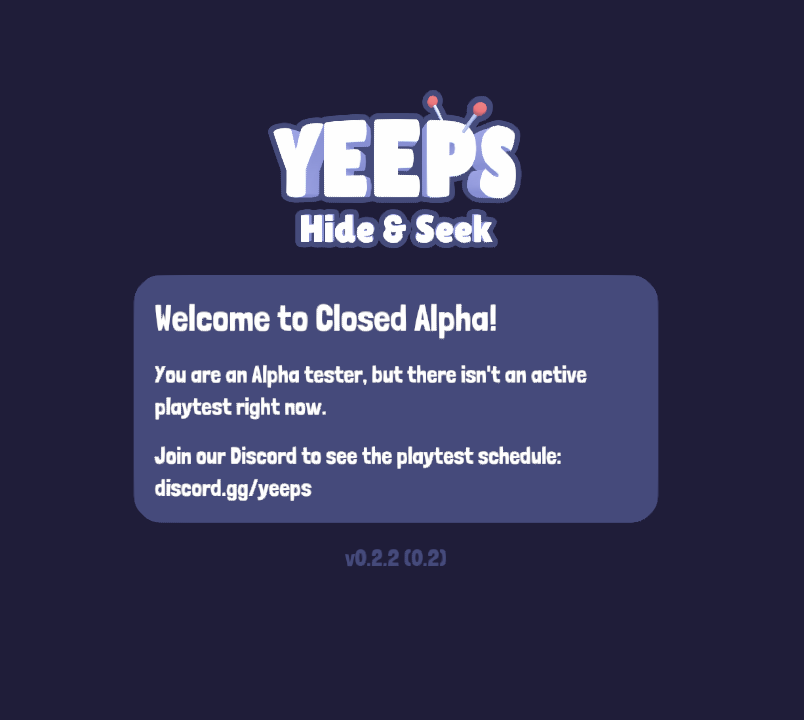

v0.2 - Playtest 2 Update

The V0.1 Update was the first ever version people could play. There were many bugs and glitches, but the Early Access players helped the developers by reporting all these bugs and glitches.